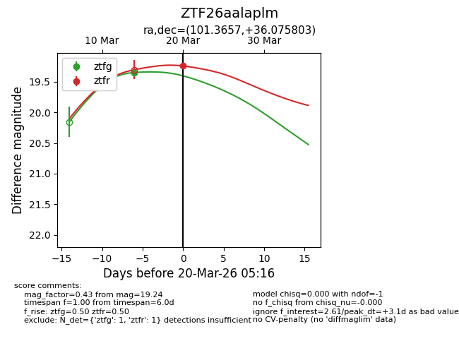
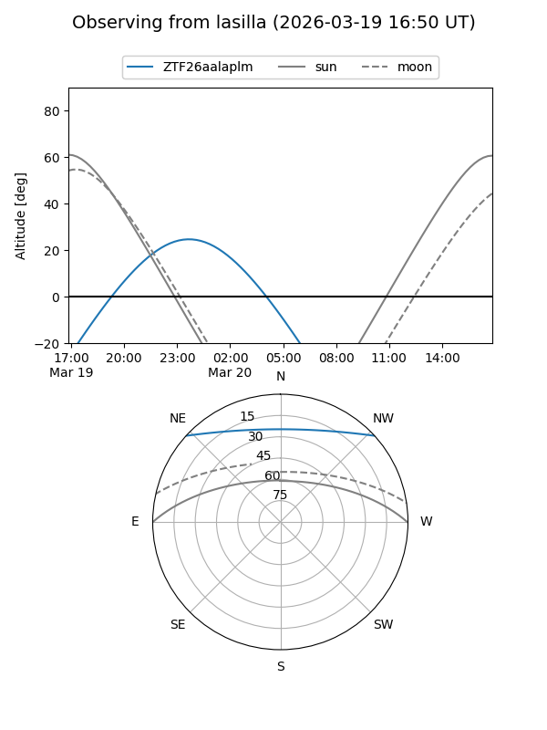
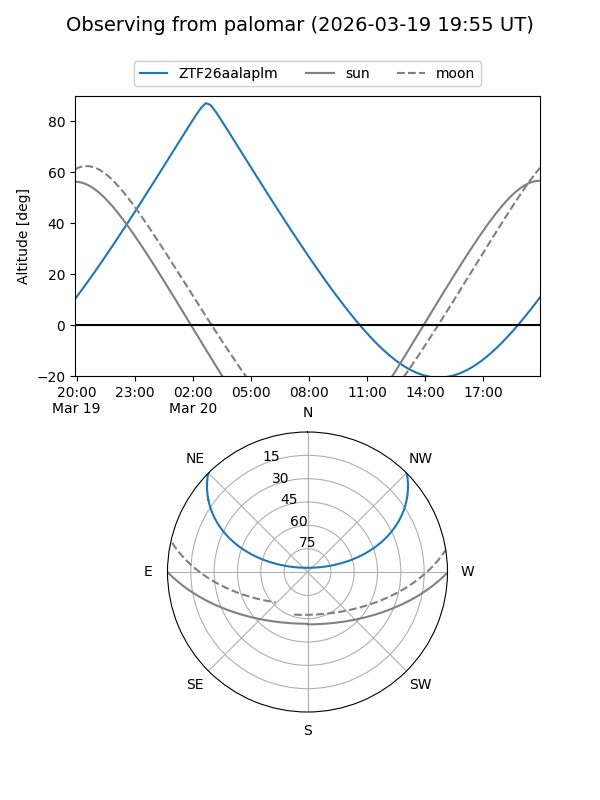
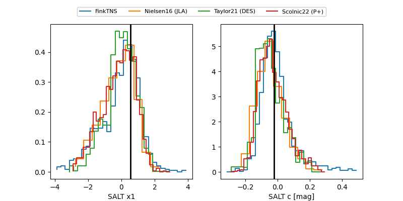

ZTF26aalaplm
Target ZTF26aalaplm at 2026-03-20 05:18
Aliases and brokers:
FINK: link
Lasair: link
ALeRCE: link
alt names
ZTF26aalaplm (ztf,fink_ztf)
Coordinates:
equatorial (ra, dec) = 101.3657,+36.07580
equatorial (HMS+DMS) = 06:45:27.76,+36:04:32.89
galactic (l, b) = (179.4861,+14.46310)
Flags:
Photometry:
last ztfg=19.35, ztfr=19.24
1 ztfg, 1 ztfr detections
Lightcurve

Visibility


Additional plots
